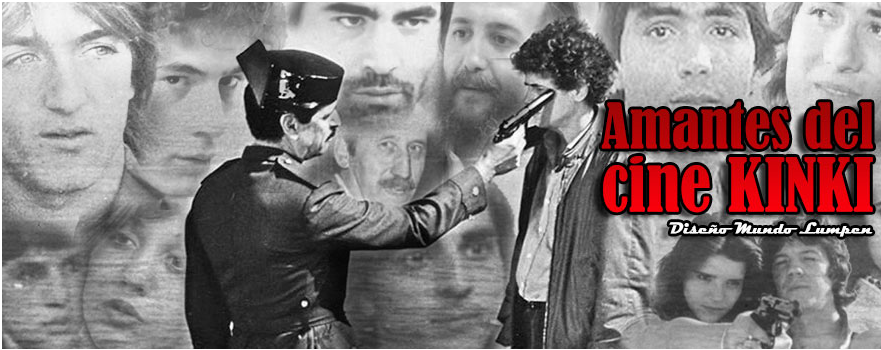
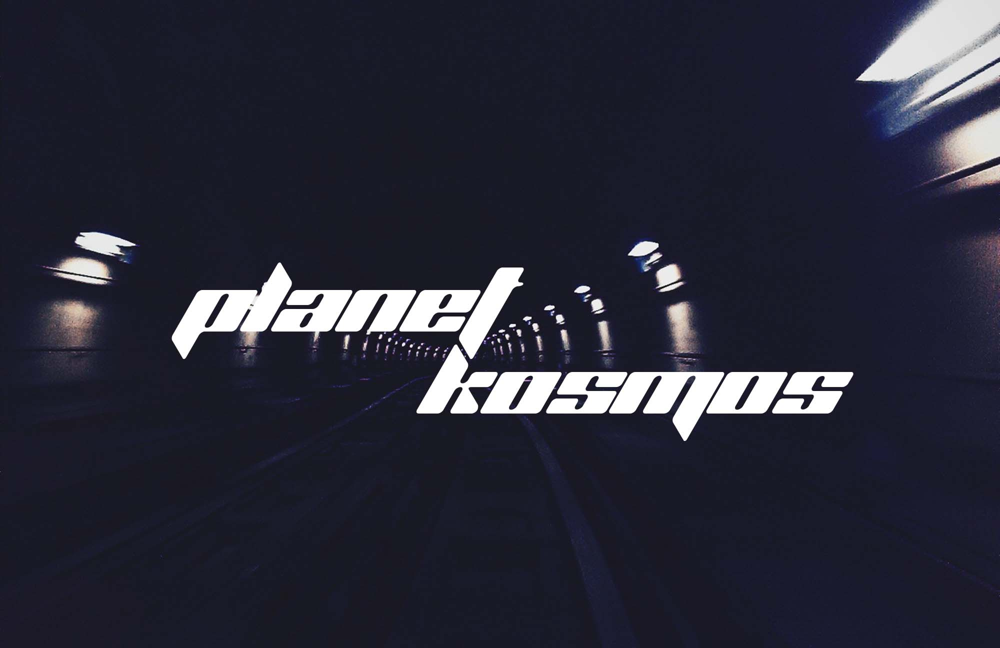

Queremos expresar nuestro agradecimiento a todas las personas que han contribuido de manera significativa a este proyecto. Su apoyo y esfuerzo han sido fundamentales.
Colaboradores
- Mi coleguilla Anónimo
Descarga su obra "Manifiesto del robo"
Recursos Utilizados
Quiero agradecer a la mayor fuente de recopilación de cine quinqui que ha habido en la red.
Es un gran honor ver que hay amantes del cine que han recopilado todas las películas posibles
y los ha dejado a nuestra disposición totalmente gratis.
Esta página al igual que "Amantes del cine quinqui" entendemos que el cine y otros medios de
entretenimiento ha de ser gratuito y popular. La "piratería" es el único medio
que tenemos y que eficazmente sirve para preservar las obras y que estén a nuestra disposición.
Muchas gracias por su gran labor de recopilar y "rular" cine a lxs currelas!

Fuente
La fuente que utilizado es "Planet Kosmos", una fuente gratuita pero no comercial.
Como podreis ver me ha gustado mucho usarla ya que le da un toque "Y2K" que le viene bien y estoy totalmente agradecido con el/la autor/a.
